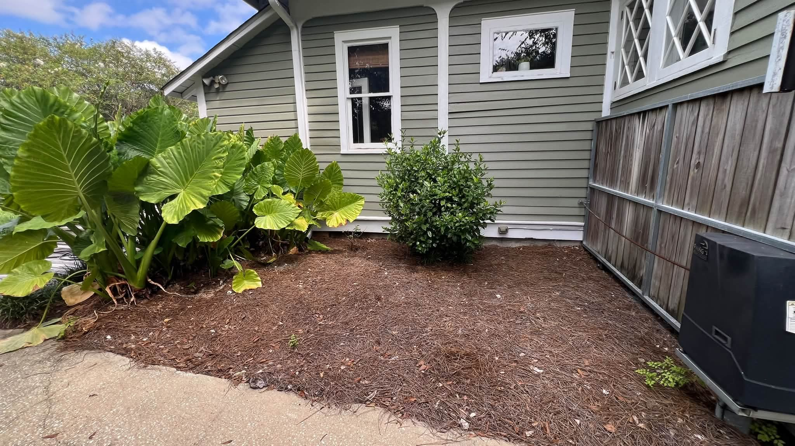

From the blog
Pine Straw Colorant in Mobile, AL: Fresh Beds Without New Straw
November 2, 2026

Here is a yard problem every Mobile homeowner knows. The pine straw in your beds is still thick enough to do its job, but the sun has bleached it gray. The whole front of the house looks tired, even though the lawn is fine and the house is clean. Replacing all that straw is a big job and a big bill, and it feels wasteful when the straw itself is still in good shape.
That is exactly the gap pine straw colorant fills. We spray professional colorant on your existing pine straw, and the beds look freshly laid again. It is one of the fastest curb appeal upgrades we offer, and it pairs perfectly with a house wash or a driveway wash before the holidays.
What pine straw colorant is
Colorant is a professional spray applied evenly over the pine straw already in your beds. It restores the rich, natural color that sun and rain fade over time. The straw keeps doing what it does best, holding moisture in the soil, keeping weeds down, and giving beds a finished look, but it looks new again. The color lasts for months, and it also extends the life of the straw, so you get more time before a full replacement is needed.
We see this a lot across the Eastern Shore in Daphne, Spanish Fort, and Fairhope, and around Tillmans Corner, where pine straw beds frame the front of the house. When the beds go gray, the whole property reads as neglected, even when everything else is in good shape. Colorant fixes that one visual problem in a single visit.
What it is not
Colorant is not a substitute for straw that is thin, matted down, or mostly gone. If you can see bare dirt through most of a bed, that bed needs fresh straw first, and colorant can go on after. It also is not mulch dye and it is not a fix for weeds poking through. We will tell you honestly on site if a bed is too thin to color, because spraying thin straw just highlights the bare spots.
For beds in decent shape, though, colorant is the smart middle step: better looking than faded straw, far less work and cost than a full restraw.
What it costs
Pine straw colorant is $149 for beds up to 1,000 square feet, and $249 for 1,001 to 2,500 square feet. Beds over 2,500 square feet get a custom quote. Bundle 3 or more services and save 10 percent, and veterans save 10 percent with ID verified at the job. Only one discount applies per order, and we always give you the best one that fits.
For comparison, a full pine straw replacement means buying bales, hauling them, spreading them, and cleaning up. Colorant skips all of that and uses the straw you already paid for.
When to book it
- Before the holidays. Guests notice the front beds first. Colorant plus a walkway wash makes the whole entry look sharp.
- Before listing a home. Fresh looking beds are one of the cheapest curb appeal wins for a listing photo.
- After a house wash. A clean house next to gray beds looks half finished. Doing both in one visit ties the whole exterior together.
- When the straw is faded but thick. If the beds still feel deep underfoot, they are good candidates.
How to keep beds looking good
Once the color is restored, keep leaves and debris blown off the beds so the color stays even. Avoid piling fresh dirt or mulch on top of colored straw, since that buries the color you just paid for. And when the color does eventually fade, usually after months of sun and rain, a fresh application brings it right back.
Beds looking faded? A fresh color may be all they need.
Kinney Cleaning Services applies pine straw colorant across Mobile County and the Eastern Shore. Veteran owned and operated.
Call (251) 767-0754 Get a Custom Quote